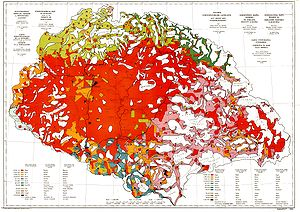

Földrajztudós
===

1902-től Lóczy Lajos (1849-1920) földrajzi tanszékén volt gyakornok. 1904-től szolgabíróként tevékenykedett Szatmárban. 1905. január 26-án a szatmári nagysomkúti választókerület országgyűlési képviselővé választotta. 1906 március-áprilisban nagy nyugati utat tett, 1907-ben Szudánban, majd Európában járt tanulmányúton. 1908. november 24-én házasságot kötött Bissingen-Nippenburg Johanna (1889-1942) grófnővel (gróf Bissingen Nippenburg Rezső Antal Gábor és foeni Mocsonyi Georgina lányával), kitől két gyermeke született: Mária (1910-1962) és Géza (1911-1983). (Utóbb Teleki Géza (1911-1983) geológus, politikus, tudós, egyetemi tanár lett Kolozsvárott 1940-'44 között, majd vallás-és közoktatási miniszter 1944-'45-ben. 1949-ben Amerikába emigrált. Unokái: Pál, Géza geológus, jelenleg Amerikában élnek.)
1910-ben, amikor a koalíciós kormány megbukott, nem vállalt újabb mandátumot. 1909-1913 között a Földrajzi Intézet nevű kiadóvállalat tudományos igazgatója, 1910-1923 között pedig a Földrajzi Társaság főtitkára volt. 1911-ben Atlasz a japáni szigetek cartographiájának történetéhez című munkája magas francia elismerésben (Jomard-díj) részesült. 1912 augusztus-októberében Cholnoky Jenővel nagy körutat tett az Egyesült Államokban. Ebből az útból született 1922-ben az Amerika gazdaság földrajza című egyetemi jegyzete. 1913-ban a Magyar Tudományos Akadémia levelező tagjává választotta, azonban székfoglalóját a háború miatt csak 1917-ben mondhatta el. 1913-ban kinevezték a Kereskedelmiiskolai Tanárképző tanárának. A Turáni Társaság tagja, majd elnöke lett. Az első világháborúban önkéntesként harcolt. Egy ideig főhadnagyként szolgált a szerb, majd az olasz fronton. Itt született (nemegyszer a lövészárokban írva) korai jelentős műve: A földrajzi gondolat története. 1918 őszétől a párizsi békekonferenciára többekkel elkészítette a Magyar Királyság etnikai térképét, majd a híres vörös térképet, amelyen a magyar nemzetiséget vörössel jelölte (carte rouge). A Tanácsköztársaság idején Svájcban tartózkodott.